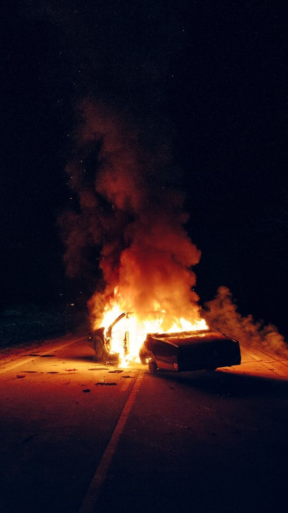
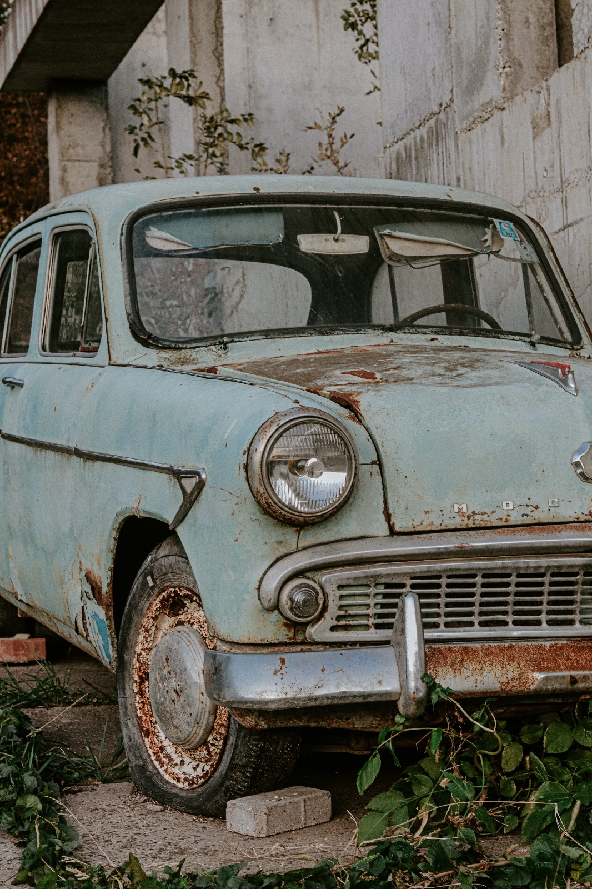
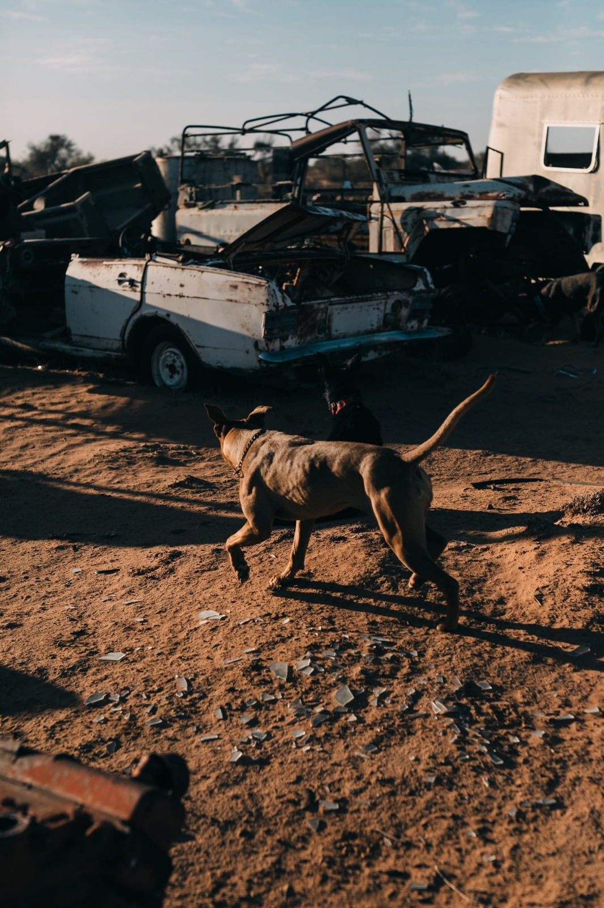
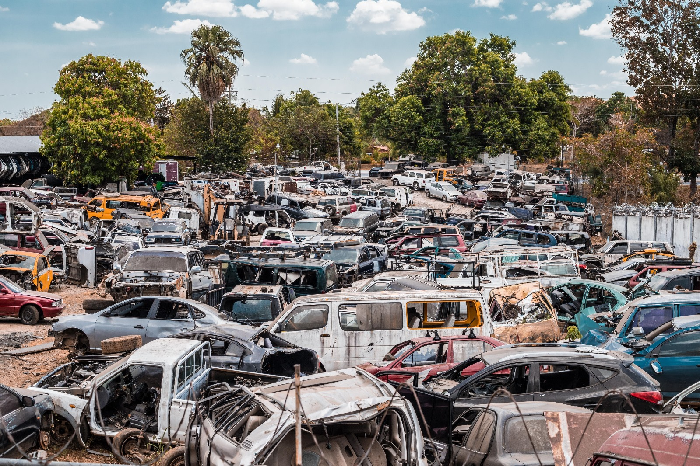

Na slici je alat

Protupozarna preventiva

Peglica

Psi za trazenje droge

Detektiranje metala
VELIKA NOVOST!
Nova oprema je stigla
31.02.1995.
Nabavljanje nove opreme na auto otpadu ključno je za poboljšanje učinkovitosti i modernizaciju operacija. U uvjetima brzih tehnoloških promjena, auto otpadi prepoznaju važnost investiranja u suvremenu opremu koja olakšava rukovanje vozilima, razdvajanje dijelova i recikliranje materijala. Nabava specijalizirane opreme poput modernih strojeva za rastavljanje, računalnih sustava za praćenje inventara i visokokvalitetnih alata pridonosi optimizaciji radnih procesa. Korištenje napredne opreme ne samo da povećava produktivnost i smanjuje troškove, već također promiče održivost praksama recikliranja.
Ulaganja u nove vučne sustave također poboljšavaju logistiku na auto otpadu, omogućavajući brže premještanje vozila s jednog mjesta na drugo. Moderni vučni kamioni s naprednom tehnologijom osiguravaju siguran transport teških ili oštećenih vozila unutar otpada. Integracija naprednih sigurnosnih značajki na vučnim vozilima dodatno štiti radnike i vozila tijekom operacija na auto otpadu.
Nabavka opreme također ide ruku pod ruku s edukacijom zaposlenika. Osiguravanje da radnici budu stručno osposobljeni za korištenje nove opreme ključno je za postizanje maksimalne učinkovitosti i sprječavanje nesreća. Organiziranje obuka i radionica pomaže zaposlenicima da se prilagode novim tehnologijama i alatima, čime se osigurava sigurno i učinkovito radno okruženje.
Nabavka nove opreme često uključuje i istraživanje tržišta kako bi se identificirali najnoviji proizvodi i tehnologije. Praćenje inovacija u industriji omogućava auto otpadima da ostanu konkurentni i prilagode se promjenama u zahtjevima tržišta. Povezivanje s pouzdanim dobavljačima i partnerima također je ključno kako bi se osigurala visoka kvaliteta opreme i pouzdani servis.
U konačnici, sustavno nabavljanje nove opreme na auto otpadu osigurava da operacije budu u skladu s najnovijim standardima i regulativama u industriji. To pomaže auto otpadima da održe visoku razinu profesionalnosti, odgovornosti prema okolišu i zadovoljstva klijenata.